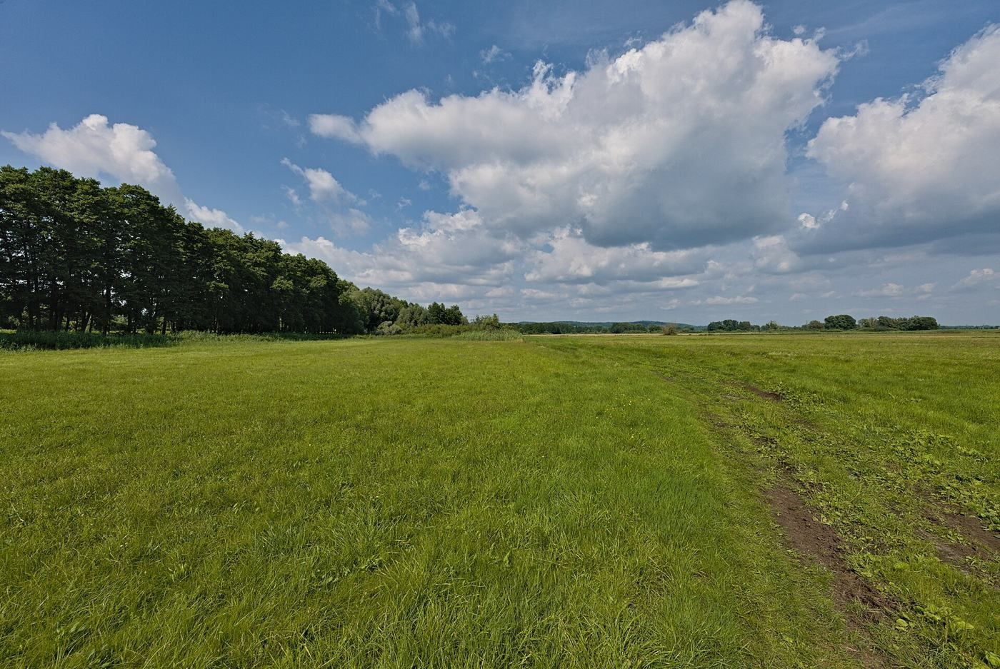
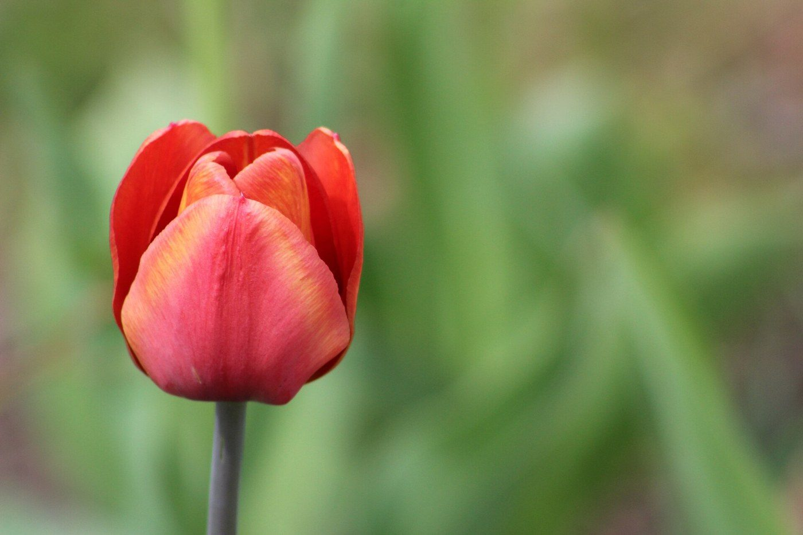
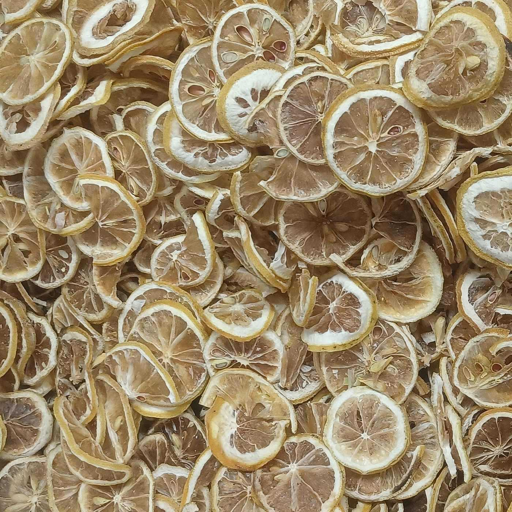
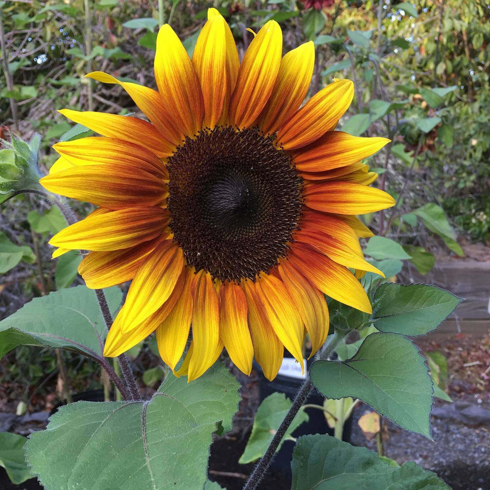
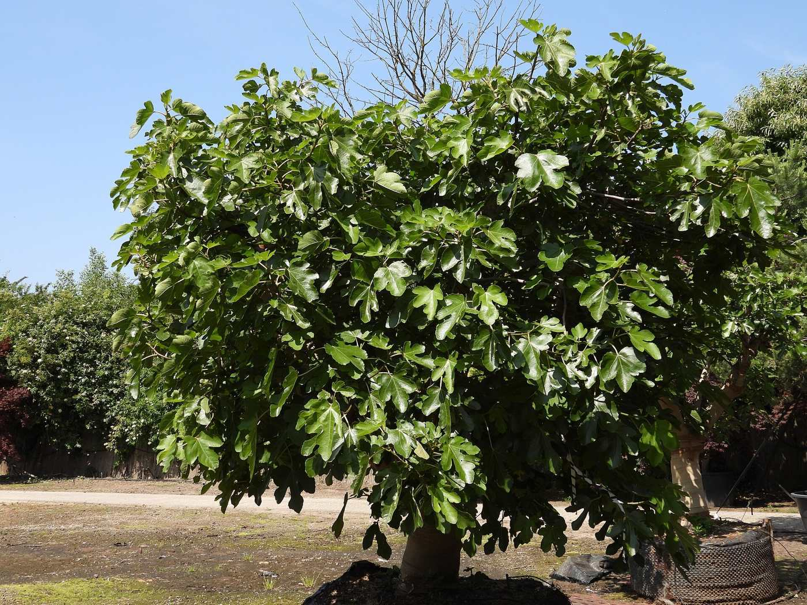

制作側の連想
巾着袋の部位を、配置図にしてみる
巾着袋の部位を図にしたもので、制作側の連想です。お店の理念・由来とは無関係で、実際の製品の仕様を示すものでもありません。六つの部位に番号をふり、上の図と並べています。
凡例
六つの部位
- 1口のギャザー袋の口を絞ったときに、布が寄って波のように見える縁の部分。
- 2ひも通し口の縁を折り返して縫い、ひもを通してある筒状の帯の部分。
- 3ひも口を絞ったり開いたりするための、細い帯状のもの。
- 4ストッパーひもが勝手に動かないように留める、小さな留め具。
- 5胴袋の本体にあたる、布が大きく広がる面。
- 6底胴の下端で、縫い目で閉じてあって丸みをもつ部分。
写真(イメージ)
写真(イメージ)






写真はイメージです。お店のものではありません。
ご案内
お店のこと(確認できたものだけ)
| 所在地 | 〒318-0004 茨城県高萩市上手綱４１０７−１ |
|---|---|
| 電話 | 準備中 |
| 営業時間 | 準備中 |
| 定休日 | 準備中 |
| ご予約 | 準備中 |
| 駐車場 | 準備中 |
| SNS | Instagram @atoriekomugi |